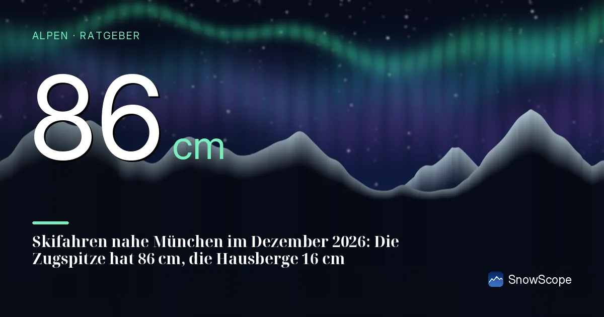
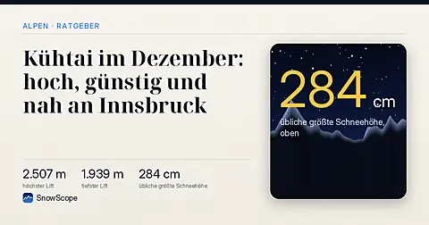

Skifahren nahe München im Dezember 2026: Die Zugspitze hat 86 cm, die Hausberge 16 cm
Wer von München aus im Dezember sicher auf Schnee will, fährt hoch: Die Zugspitze hat heute 86 cm oben und damit die beste Grundlage in Deutschland, während die Hausberge um Lenggries und Bayrischzell bei rund 16 cm liegen. Bis Montag kommt kaum Neuschnee dazu; der Dezember entscheidet, wann auch die niedrigen Gebiete richtig starten.
Die Live-Schneeprognose für München in der SnowScope-AppSchneehöhen, Pulverschnee-Alarme und 3D-Karte, gratis.
Die Hausberge: Brauneck, Sudelfeld, Spitzingsee
Die Gebiete eine Stunde südlich der Stadt sind die schnellsten Ziele, aber auch die niedrigsten. Das Brauneck reicht bis 1.594 m, das Sudelfeld bis 1.507 m, der Spitzingsee bis 1.569 m. Der Schnee dieser Woche hat dort 12 cm gebracht; oben liegen jetzt 16 cm am Brauneck, 15 cm am Sudelfeld und 15 cm am Spitzingsee.
Für Ende November ist das ordentlich. Auf 1.154 m am Brauneck liegen 8 cm, so viel wie normal; am 25. Dezember sind es dort üblicherweise 24 cm. Ohne Beschneiung wären Pisten bis ins Tal an Weihnachten in vielen Jahren knapp, deshalb hängt der Start in diesen Gebieten an kalten Nächten.
| Skigebiet | Gipfel | Schnee oben heute | Üblich am 25. Dezember |
|---|---|---|---|
| Zugspitze | 2.627 m | 86 cm | 68 cm |
| Kühtai | 2.507 m | 58 cm | 82 cm |
| Garmisch-Classic | 2.047 m | 41 cm | 35 cm |
| KitzSki | 1.993 m | 34 cm | 28 cm |
| Brauneck | 1.594 m | 16 cm | 24 cm |
| Sudelfeld | 1.507 m | 15 cm | 26 cm |
| Spitzingsee | 1.569 m | 15 cm | 28 cm |
Garmisch: Zugspitze und Classic-Gebiet
Die Zugspitze ist Deutschlands schneesicherstes Ziel. Auf 1.811 m liegen heute 30 cm, normal sind 30 cm; an Weihnachten sind es dort meist 68 cm, und in 89 % von 46 Wintern lag zu Neujahr mehr als ein halber Meter.
Das Garmisch-Classic-Gebiet am Kreuzeck und an der Alpspitze liegt tiefer. Oben hat es heute 41 cm; die übliche Weihnachtshöhe auf 1.387 m ist 35 cm, und nur in 26 % der Winter waren es zu Neujahr mehr als 50 cm. Die Abfahrt bis Garmisch braucht also meist Kunstschnee.
Über die Grenze: Tirol in eineinhalb bis zwei Stunden
Wer weiter fährt, gewinnt vor allem Höhe. Kühtai, mit dem Ort selbst auf 1.939 m, hat 58 cm oben und auf 2.223 m eine übliche Weihnachtshöhe von 82 cm. KitzSki ist größer, aber tiefer: oben 34 cm, an Weihnachten auf 1.378 m üblicherweise 28 cm.
Für einen Tagesausflug im Dezember ist Kühtai damit die sicherste Wahl außerhalb der Zugspitze, Kitzbühel die mit den meisten Pistenkilometern.
Was der Dezember normalerweise bringt
In den bayerischen Alpen wächst die Schneedecke im Dezember langsam. Am Sudelfeld liegen auf 1.186 m am 8. Dezember üblicherweise 17 cm, am 15. Dezember 25 cm und an Weihnachten 26 cm. Weihnachtstauwetter ist in den Voralpen häufig: An einem Tag kann ein Föhnsturm oder warmer Regen die Hälfte des Schnees kosten.
Der Start in diesem Jahr ist daher kein Garant, aber ein Vorteil: Die Gebiete beginnen den Dezember mit einer Grundlage, auf die sich Kunstschnee gut auflegen lässt.
Häufige Fragen
Wo liegt im Dezember in Deutschland sicher Schnee? Verlässlich nur auf der Zugspitze. In den übrigen bayerischen Gebieten hängt der Dezember an der Beschneiung und an der Wetterlage der Woche.
Lohnt sich ein Tagesausflug schon Anfang Dezember? Ja, wenn man hoch fährt: Am 8. Dezember liegen auf 1.811 m an der Zugspitze üblicherweise 46 cm, in Kühtai auf 2.223 m 63 cm.
Welches Gebiet ist für Familien am einfachsten? Das Brauneck und der Spitzingsee: kurze Anfahrt, übersichtliche Pisten, gute Einkehr. Bei wenig Schnee laufen dort aber oft nur die beschneiten Hänge.
Unser Tipp für die nächsten Wochenenden
Am Wochenende 28. und 29. November ist es trocken und kalt. Die Zugspitze und Kühtai bieten den besten Schnee; die Hausberge lohnen sich, sobald sie den Betrieb aufnehmen. Aktuelle Werte für jedes Gebiet: Zugspitze, Garmisch-Classic, Brauneck, Sudelfeld.
Tipps für Skifahrer
- Früh losfahren: Die A95 nach Garmisch und die A8 Richtung Inntal sind an schönen Dezember-Samstagen ab 8 Uhr voll.
- Mit der Bahn bis Garmisch und weiter mit der Zugspitzbahn spart man sich Stau und Parkplatzsuche.
- Vignette nicht vergessen, wenn es nach Tirol geht.
- Mehr zu den deutschen Skigebieten im Dezember: welche Gebiete den Schnee halten und die Seite Deutschland.
Zu diesen Zahlen
Schneewerte: die SnowScope-Schneekarte und -Vorhersage von heute und unsere Bilanz von 46 vergangenen Wintern pro Skigebiet (eine Schätzung für die Fläche, keine Meldung des Skigebiets).
Diesen Bericht zitieren
Für Forschung, Lehre oder Presse: Zahlen und Grafiken sind unter CC BY 4.0 mit dieser Quellenangabe frei nutzbar.
SnowScope (2026), Skifahren nahe München im Dezember 2026: Die Zugspitze hat 86 cm, die Hausberge 16 cm, https://snowscope.app/blog/de/2026/11/skigebiete-nahe-muenchen-dezember-2026-wo-jetzt-schnee-liegt.html, abgerufen am 2026-11-27
SnowScope (Atlas Labs). (2026, November 27). Skifahren nahe München im Dezember 2026: Die Zugspitze hat 86 cm, die Hausberge 16 cm. SnowScope snow reports. https://snowscope.app/blog/de/2026/11/skigebiete-nahe-muenchen-dezember-2026-wo-jetzt-schnee-liegt.html
BibTeX
@misc{snowscope2026skigebietenahemuenchende,
author = {{SnowScope (Atlas Labs)}},
title = {Skifahren nahe München im Dezember 2026: Die Zugspitze hat 86 cm, die Hausberge 16 cm},
year = {2026},
month = nov,
howpublished = {\url{https://snowscope.app/blog/de/2026/11/skigebiete-nahe-muenchen-dezember-2026-wo-jetzt-schnee-liegt.html}},
note = {Published 2026-11-27 18:32 UTC; accessed 2026-11-27}
}· CC BY 4.0 · Methoden, Daten und Werkzeuge →
München folgen
Gratis: eine Nachricht, wenn Neuschnee kommt, und jeden Morgen die Vorhersage.
Weitere Schneeberichte

Kühtais Basis auf 1939 m bleibt im Dezember zuverlässig schneesicher. Am 15. Dezember typischerweise 60 cm in der Basis, 72 cm auf Mittelhöhe, 112 cm oben. Nebensaison-Sechstagespass EUR 269 bis 18. Dezember.

Kitzbühel ist berühmt und tief gelegen. Was 46 vergangene Winter über den Schnee auf 762 m, 1.377 m und 1.993 m sagen, was sich geändert hat und welche Wochen die sicherere Wahl sind.